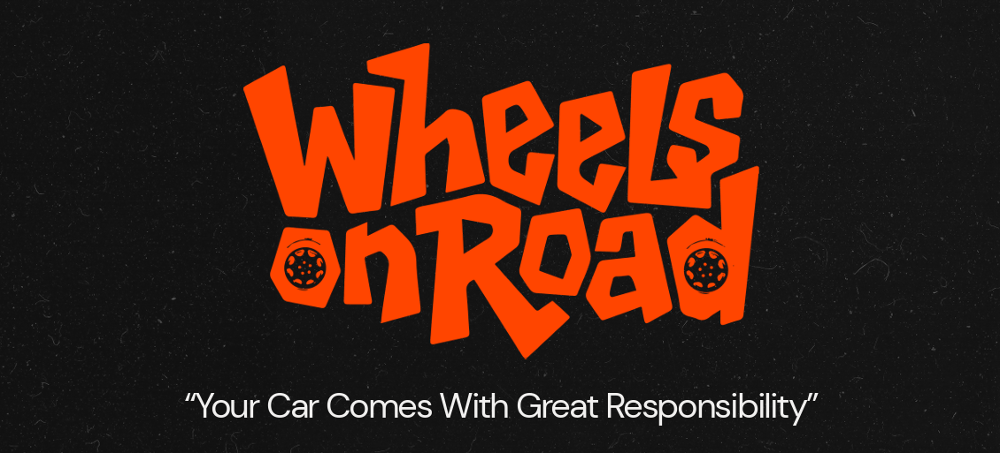
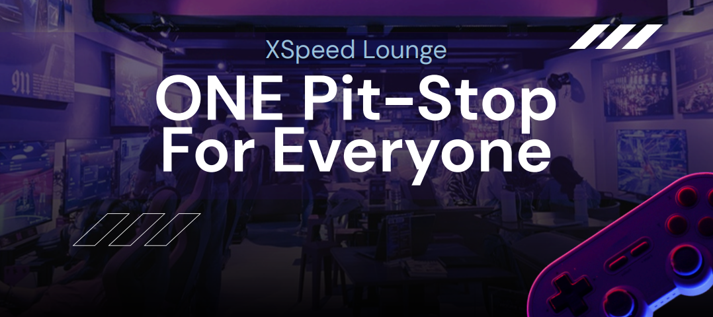
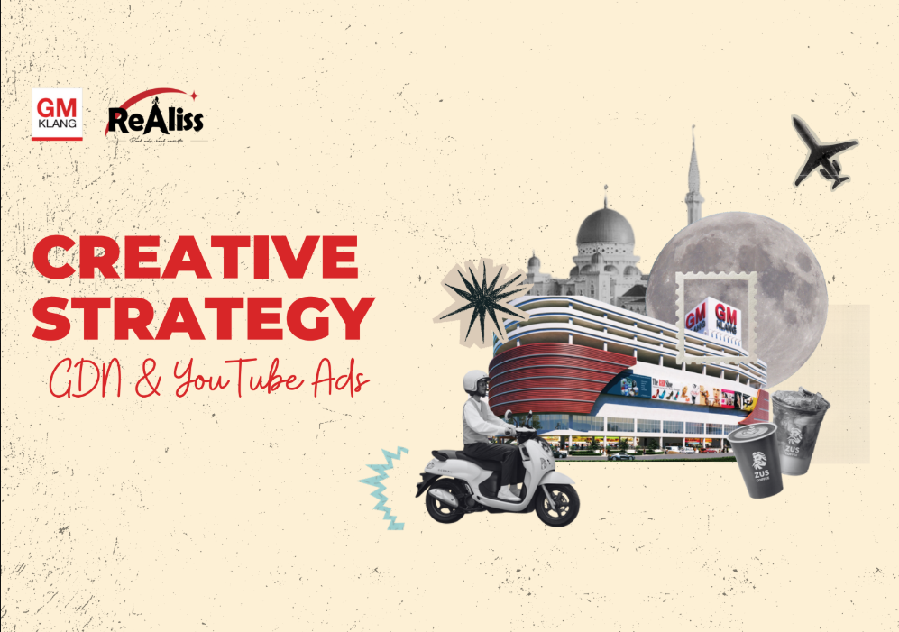
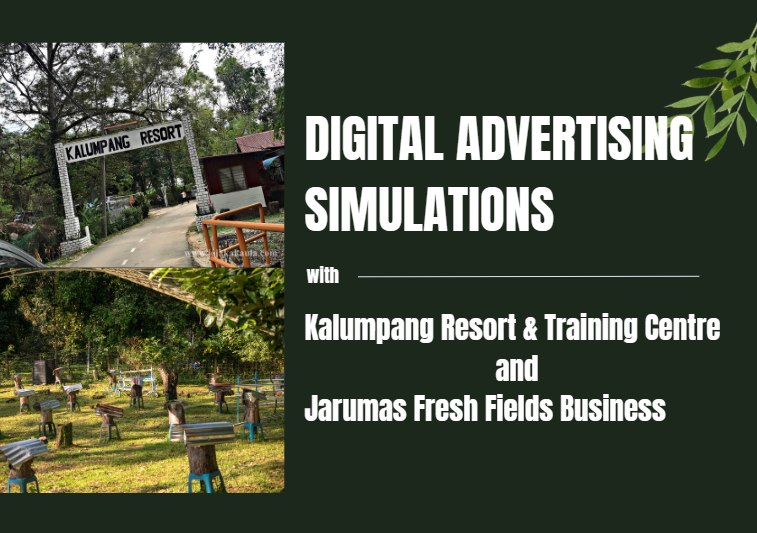

SELECTED WORK
Selected campaigns that showcase my strategic thinking, creativity, and industry experience.

Advertising Campaign
Run a Campaign to Promote Road Safety Awareness.
An integrated advertising campaign that raised awareness about road safety and encouraged responsible driving through creative storytelling, social media engagement, and community outreach.

Advertising Campaign
Promoting Xspeed Lounge as a Go-To Socializing Destination
A dynamic advertising campaign that positioned Xspeed Lounge as the ultimate socializing destination, and targeted digital advertising.

Advertising Campaign
Repositioning GM Klang as a Desirable Destination Through Integrated Campaigns
A comprehensive advertising campaign designed to reposition GM Klang as a desirable destination by highlighting its unique value proposition and creating meaningful connections with the target audience.

Digital Advertising Campaign
Driving Engagement and Exposure for Jarumas Fresh Field Business and Kalumpang Resort
A creative strategy that repositioned Jarumas Fresh Field Business and Kalumpang Resort as desirable destinations through integrated digital campaigns, audience insights, and creative storytelling.

Media Planning & Buying
Building an Omnichannel Campaign for Gen Z Consumers
An omnichannel media campaign combining digital platforms, KOL collaborations, experiential marketing, and out-of-home advertising to engage Gen Z consumers.

Industry Experience
Supporting Brand Communication Through Social Media Content
Created social media content and copywriting for client campaigns while supporting day-to-day digital marketing activities during a four-month agency internship.

Advertising Copywriting
Promoting Local Agriculture Through Digital Storytelling
Developed campaign copy and creative content to promote local agricultural products through engaging digital storytelling.

Community Communication
Making Digital Rights Accessible Through Community Communication
Designed educational campaign content that simplified digital rights and media law into engaging community-focused communication materials.